单细胞测序 (scRNA-seq) 数据分析
本文介绍使用R语言对单细胞测序数据进行分析的一般步骤
本文使用的样例数据在此下载
前置条件
一定的R语言基础（数据类型与数据结构，包的安装与使用，Bioconductor包管理器的使用，ggplot2包的使用）
具有充足的内存（对于较大数据可能需要8GB以上）
安装了以下包（部分包可能不是运行本文代码必须的，但在处理数据中较为常用，因此仍推荐安装）：
'Seurat', 'dplyr', 'mindr', 'tidyverse', 'patchwork', 'SeuratObject', 'SingleR', 'GenomeInfoDb', 'scater', 'loomR', 'monocle', 'SummarizedExperiment', 'Matrix', 'BiocManager', 'ggplot2', 'ggrastr', 'pheatmap', 'S4Vectors', 'IRanges', 'EnhancedVolcano'
可以在开始时使用以下代码，对所需的包进行批量安装并加载：
x1PackageForSingleCellSeq<-function( ){2pnames<-c(3'Seurat', 'dplyr', 'mindr', 'tidyverse', 'patchwork',4'SeuratObject', 'SingleR', 'GenomeInfoDb', 'scater', 'loomR', 'monocle',5'SummarizedExperiment', 'Matrix', 'ggplot2', 'ggrastr',6'BiocManager', 'S4Vectors', 'IRanges', 'EnhancedVolcano',7NULL8)9#使用自带的包管理器尝试进行安装10i<-111while(i<=length(pnames))12{13if(!requireNamespace(pnames[i],quietly=TRUE))14{15install.packages(pnames[i])16cat(c("\n","install:",pnames[i],"\n"))17}18library(pnames[i],character.only=TRUE)19cat(c("\n","load:",pnames[i],"\n"))20i<-i+121}22#使用Bioconductor管理器尝试进行安装23i<-124while(i<=length(pnames))25{26if(!requireNamespace(pnames[i],quietly=TRUE))27{28BiocManager::install(pnames[i])29cat(c("\n","install:",pnames[i],"\n"))30}31library(pnames[i],character.only=TRUE)32cat(c("\n","load:",pnames[i],"\n"))33i<-i+134}35cat("\n\nPackageForSingleCellSeq Done\n\n")36}3738PackageForSingleCellSeq( )本文中使用R版本为4.1.2，且使用RStudio作为GUI
Step 1 - 数据读取、质控与聚类分析
原始数据准备与读取
以下内容均在成功加载所需包后方可正常运行 首先设置工作环境
41rm(list=ls()) #清除环境中已有变量2setwd("U:/SingleCellSeq/demo") #设置工作目录，根据实际位置自行设置。对于Windows，需要将反斜杠\更改为斜杠/3dir.create(paste(getwd(),"/R_data",sep='')) #在工作目录中创建新目录R_data，用于储存数据4dir.create(paste(getwd(),"/pictures",sep=''))#在工作目录中创建新目录pictures，用于储存图片之后载入原始测序数据。通用的scRNAseq数据中，每个样本应包括三个文件：
barcodes.tsv.gzfeatures.tsv.gzmatrix.mtx.gz
这三个文件文件名均为固定，不可修改；相同样本的三个文件同处于一个文件夹目录下，可利用文件夹名区分样本名。
在R中需要读取该样本数据时，只需要指定三个文件所在的文件夹位置，即可使用Seurat包自动读取并分析
本文中，共两个样本（分别命名为ctrl和exper），存储在工作目录下的source目录内。即文件结构为：
121（工作目录）2│3└─source4├─ctrl5│ barcodes.tsv.gz6│ features.tsv.gz7│ matrix.mtx.gz8│9└─exper10barcodes.tsv.gz11features.tsv.gz12matrix.mtx.gz
分别读取ctrl、exper组的原始数据，并创建对应的Seurat对象
181URLctrl<-'./source/ctrl/' #ctrl组的源数据位置2URLexper<-'./source/exper/' #exper组的源数据位置3
4#读取原始数据5ctrl.counts<-Read10X(URLctrl)6exper.counts<-Read10X(URLexper)7
8#将原始数据转换为Seurat对象9#函数用法：CreateSeuratObject(counts = 原始数据, project = "样本名（可随意制定）")10ctrl <- CreateSeuratObject(counts = ctrl.counts, project = "ctrl")11exper <- CreateSeuratObject(counts = exper.counts, project = "exper")12#此时可直接剔除存在于小于min.cells数的基因与含有基因（features）数小于min.features的细胞13#如14#exper <- CreateSeuratObject(counts = exper.counts, project = "exper",min.cells = 3,min.features =200)15
16#由于原始数据已经成功用来创建了Seurat对象，因此可以将存储原始数据的变量删除以释放内存17rm(ctrl.counts)18rm(exper.counts)质控指标计算
成功创建Seurat对象后，可以根据自身需要，计算指定的统计指标并附加存储与Seurat对象中，为后续质控环节做准备
使用$符号，即可在对象（本质为列表）内追加新的元素（即存储一个新的指标）
常见需要关注的指标有：
nFeature_RNA：每个细胞中检测到的基因种类数
- 低质量的细胞或空的droplet液滴通常含有很少的基因
- Cell doubles 或 multiplets可能表现出异常高的基因计数
nCount_RNA：每个细胞中检测到的总分子数，即UMIs（Unique Molecule Identifiers）
- 过低/过高可能代表细胞不完整、质量低或单个液滴包含多个细胞
percent.mt：线粒体基因含量比例
- 高线粒体基因比例：低质量或者死亡细胞
- 低线粒体基因比例：细胞碎片或特殊类型细胞
371#在列表中添加指标：线粒体DNA的量2#如小鼠中，线粒体基因名称中含有表达式"^mt-"，因此可以快速寻找出线粒体基因（人中线粒体基因为"^MT-"）3ctrl$mtRatio<-PercentageFeatureSet(ctrl, pattern = "^mt-")4exper$mtRatio<-PercentageFeatureSet(exper, pattern = "^mt-")5
6#在列表中添加指标：基因复杂度（log10(feature)/log10(count)）7#反映测序深度（每个基因平均被测得的分子数）：复杂度越高，测序深度越低8ctrl$comlexity<-log10(ctrl$nFeature_RNA)/log10(ctrl$nCount_RNA)9exper$comlexity<-log10(exper$nFeature_RNA)/log10(exper$nCount_RNA)10
11#方便查看，将@meta.data单独提取并展示12ctrl_meta<-ctrl@meta.data13exper_meta<-exper@meta.data14
15#可以修改提取出的元数据16#Rename col:（使用dplyr::rename工具,新名字=旧名字）17ctrl_meta<-ctrl_meta %>%18 dplyr::rename(19 genes=nFeature_RNA,20 umi=nCount_RNA,21 group=orig.ident22 )23
24exper_meta<-exper_meta %>%25 dplyr::rename(26 genes=nFeature_RNA,27 umi=nCount_RNA,28 group=orig.ident29 )30
31#也可直接将提取出&修改过的meta.data赋值回原数据32ctrl@meta.data<-ctrl_meta33exper@meta.data<-exper_meta34
35#时常保存对象！36save(ctrl, file=paste(getwd(),"./R_data/ctrl_seurat.RData",sep=''))37save(exper, file=paste(getwd(),"./R_data/exper_seurat.RData",sep=''))进行数据质控：剔除质量较低的细胞
41#查看数据质量2#小提琴图3VlnPlot(ctrl, features = c("genes", "umi", "mtRatio"), ncol = 3)4VlnPlot(exper, features = c("genes", "umi", "mtRatio"), ncol = 3)绘制出的小提琴图如图所示
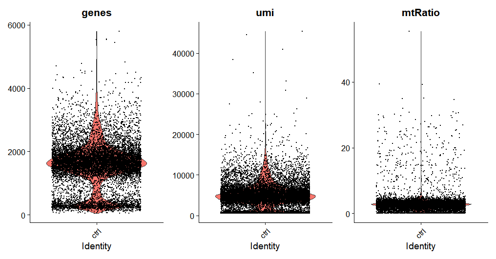
231#密度分布图(x=umi/genes/complexity etc)2###绘制ctrl中质控指标3pcom<-ctrl@meta.data %>%4 ggplot(aes(x=comlexity)) +5 geom_density(alpha = 0.2) +6 scale_x_log10()7
8pumi<-ctrl@meta.data %>%9 ggplot(aes(x=umi)) +10 geom_density(alpha = 0.2) +11 scale_x_log10()12
13pf<-ctrl@meta.data %>%14 ggplot(aes(x=genes)) +15 geom_density(alpha = 0.2) +16 scale_x_log10()17
18pmt<-ctrl@meta.data %>%19 ggplot(aes(x=mtRatio)) +20 geom_density(alpha = 0.2) +21 scale_x_log10()22
23pcom+pumi+pf+pmt#同时绘制四张图密度分布图如图所示
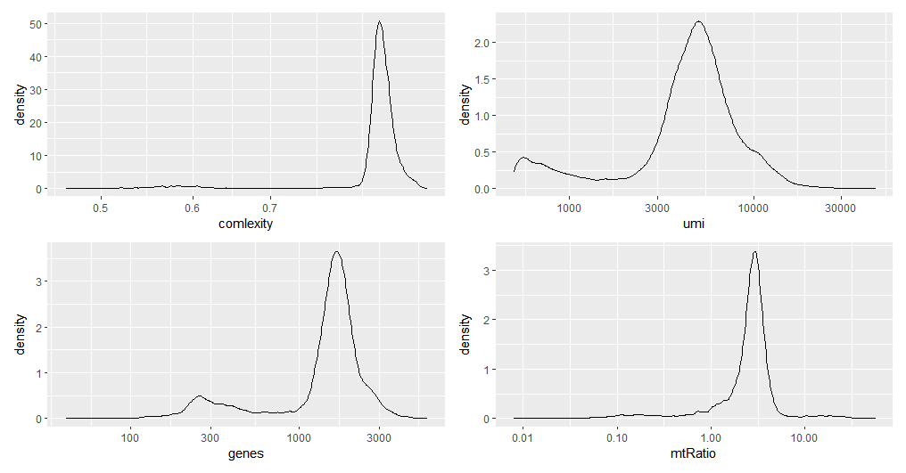
221###绘制exper中质控指标2pcom<-exper@meta.data %>%3 ggplot(aes(x=comlexity)) +4 geom_density(alpha = 0.2) +5 scale_x_log10()6
7pumi<-exper@meta.data %>%8 ggplot(aes(x=umi)) +9 geom_density(alpha = 0.2) +10 scale_x_log10()11
12pf<-exper@meta.data %>%13 ggplot(aes(x=genes)) +14 geom_density(alpha = 0.2) +15 scale_x_log10()16
17pmt<-exper@meta.data %>%18 ggplot(aes(x=mtRatio)) +19 geom_density(alpha = 0.2) +20 scale_x_log10()21
22pcom+pumi+pf+pmt211#仅保留umi>20002#筛选/剔除：使用subset()函数，提取符合条件的对象3#subset(x=数据,subset=条件)4ctrl<-subset(5 x=ctrl,6 subset=(umi>2000)7)8
9
10#可以使用merge来合并两个seurat对象11#merge(对象1,y=c(对象2,对象3,...),add.cell.ids=c(,,),project="")12mergedata<-merge(ctrl,y=exper,add.cell.ids=c("ctrl","exper"),project="Homo_sapiens_merged")13
14#这里展示对合并后数据进行筛选15mergedata_filtered<-subset(16 x=mergedata,17 subset=(umi>2000)&(genes>1000)&(mtRatio<10)18)19
20#绘制剔除后的分布图；两组同时绘制21VlnPlot(mergedata_filtered, features = c("genes", "umi", "mtRatio"), ncol = 3)121##以下步在CreateSeuratObject声明中即可完成，不推荐此方法！2# #保留只在10个以上细胞中表达的基因 3# genecounts<-GetAssayData(object =mergedata_filtered, slot = "counts")4# isexpress<-(genecounts>0) #生成逻辑向量，不表达为05# # 将所有TRUE值相加，如果每个基因的TRUE值超过10个，则返回TRUE。6# isexpressover <- (Matrix::rowSums(isexpress) >= 10)7# # 仅保留那些在10个以上细胞中表达的基因8# genecounts_filtered <- genecounts[isexpressover, ]9# # 重新赋值给经过过滤的Seurat对象10# mergedata_filtered <- CreateSeuratObject(counts=genecounts_filtered,project = "mergedata")11
12save(mergedata_filtered, file=paste(getwd(),"/R_data/mergedata_filtered_seurat.RData",sep=''))基因表达初步分析
绘制每个样本中的基因表达图，寻找组内高变的基因
281#标准化2mergedata_norm<-NormalizeData(mergedata_filtered,normalization.method = "LogNormalize",scale.factor = 10000)3
4#feature selection 选取高变基因5#使用 FindVariableFeatures函数的vst方法，nfeatures=待选取的高变基因个数6mergedata_var <- FindVariableFeatures(mergedata_norm, selection.method = "vst", nfeatures = 2000)7
8#高变基因的质控小提琴图9#VlnPlot(mergedata_var,features = c('genes','umi'))10
11#利用subset提取出所有ctrl/exper数据12ctrl_var<-subset(x=mergedata_var,subset=(group=="ctrl"))13exper_var<-subset(x=mergedata_var,subset=(group=="exper"))14# Identify the 10 most highly variable genes,使用head()与VariableFeatures()函数15ctrl_top <- head(VariableFeatures(ctrl_var), 10)16exper_top<-head(VariableFeatures(exper_var), 10)17
18#绘制ctrl所有高变基因VariableFeaturePlot()19ploti1=VariableFeaturePlot(ctrl_var)20#并将其中前10进行标注LabelPoints()21plot1=LabelPoints(plot = ploti1, points = ctrl_top, repel = TRUE)22
23#绘制exper所有高变基因VariableFeaturePlot()24ploti2=VariableFeaturePlot(exper_var)25#并将其中前10进行标注LabelPoints()26plot2=LabelPoints(plot = ploti2, points = exper_top, repel = TRUE)27
28plot1+plot2#同时绘制两张图基因表达图如图所示
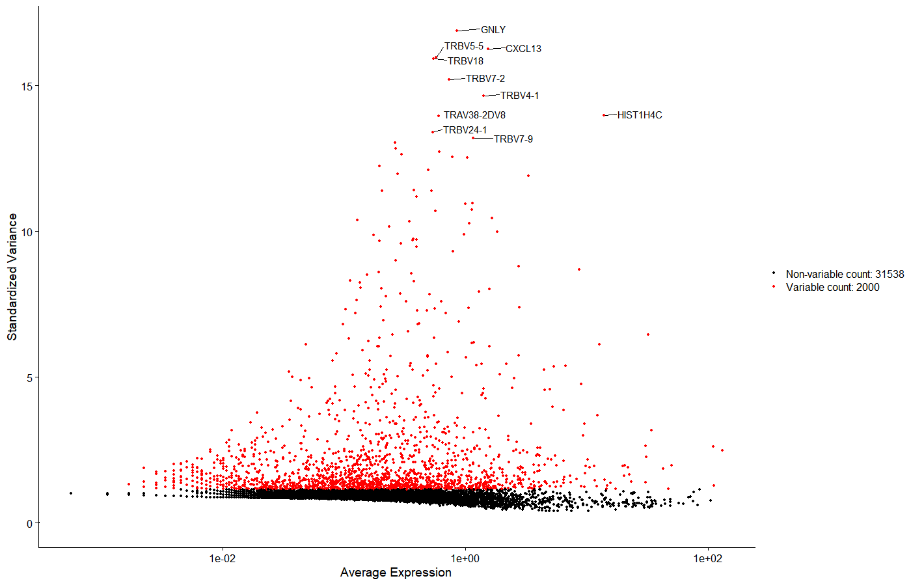
71#以ctrl组为例，显示核糖体基因名称，使用grepl函数提取含有关键字的元素列表并返回BOOL向量，ignore大小写2rbgenes<-rownames(ctrl_var)[grepl('^RP',rownames(ctrl_var),ignore.case = TRUE)]3#仅保留所有核糖体基因4ctrl_RB<-ctrl_var[rbgenes, ]5#在总基因分布图中标注前十的核糖体基因6plot_RB<-LabelPoints(plot = ploti1, points = head(VariableFeatures(ctrl_rb),10), repel = TRUE)7plot_RB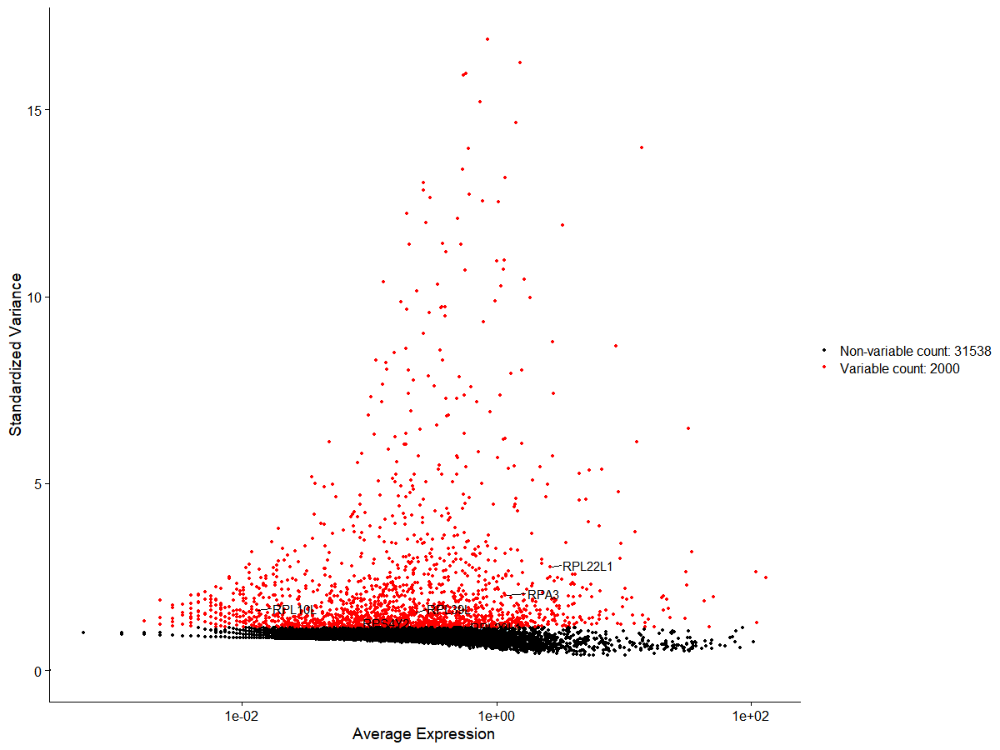
细胞PCA降维与聚类
91##数据降维2#中心化3mergedata_scaled<-ScaleData(mergedata_var)4
5#PCA分析6mergedata_PCA<-RunPCA(object = mergedata_scaled)7
8#查看主成分比例分布，便于确定主成分数量9ElbowPlot(mergedata_PCA)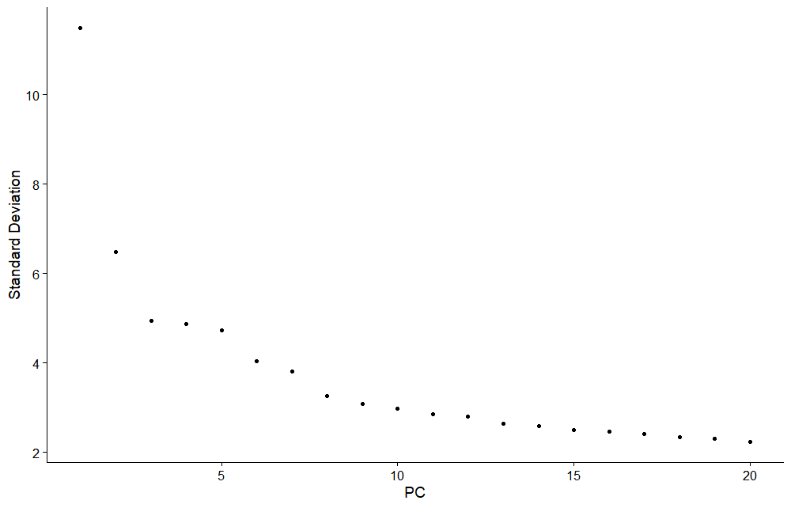
31PCA<-8 #选取至不再下降为为止2#绘制PC分类图，使用split.by，不同标签（ctrl/exper）分别绘制3PCAPlot(mergedata_PCA,split.by="group")使用split.by，不同标签（ctrl/exper）分别绘制
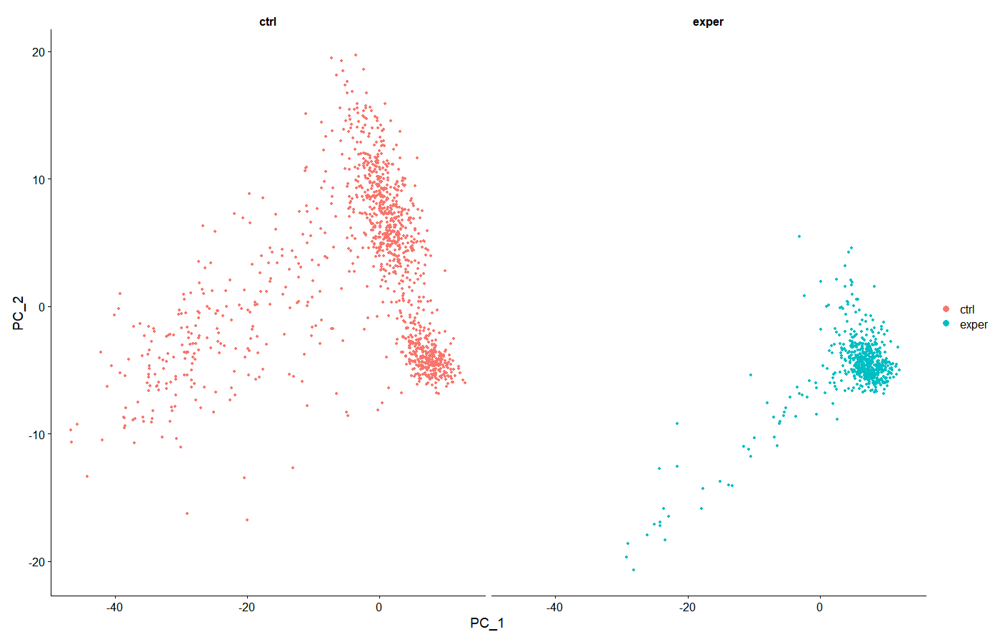
21#绘制PC分类图，使用group.by，不同标签（ctrl+exper）同时绘制2PCAPlot(mergedata_PCA,group.by="group")使用group.by，不同标签（ctrl+exper）同时绘制，可以对比两个样本分布差异
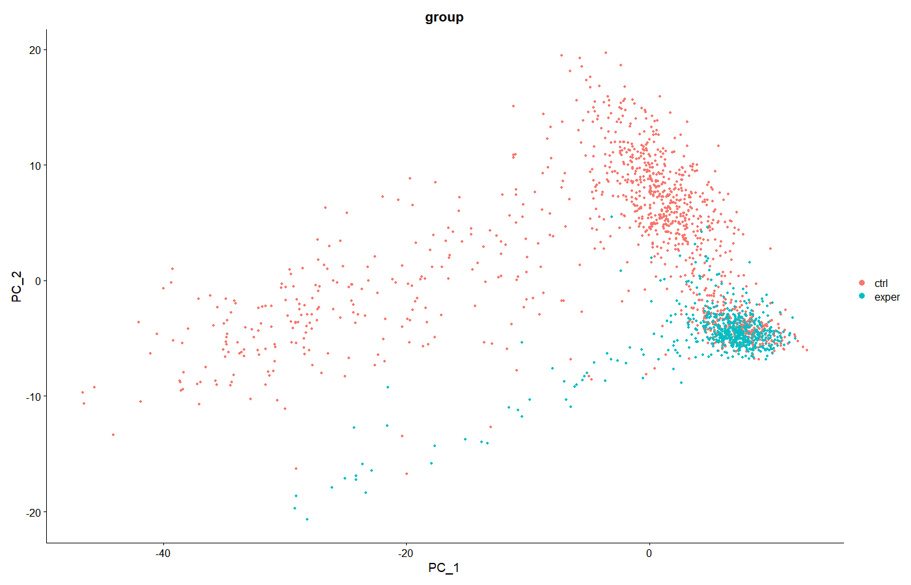
211#细胞分类，即采用FindNeighbors()与FindClusters()2#选择不同的resolution值可以获得不同的cluster数目，值越大cluster数目越多，默认值是0.5.3mergedata_neighbors <- FindNeighbors(mergedata_PCA, dims = 1:PCA)4mergedata_clusters <- FindClusters(mergedata_neighbors, resolution = 0.5)5
6##可视化分类结果,TSNE与UMAP均为在原始seurat对象中追加成分，故无需新建对象7#RunTSNE/RunUMAP的seurat对象中必须包含PCA，即已运行过RunPCA。8#方法一：TSNE9mergedata_clusters<-RunTSNE(mergedata_clusters,dims=1:PCA,label=T)10#不同标签（ctrl/exper）分别绘制11tplot=TSNEPlot(mergedata_clusters,split.by="group",label=T,repel=T)12#使用png()函数，可以将图片以PNG格式保存。需要与dev.off()配对使用13png(paste(getwd(),"/pictures/","TSNE_labeled.png",sep=''), height=6000,width=9000, res=850)14tplot15dev.off()16
17#不同标签（ctrl+exper）同时绘制18tplot=TSNEPlot(mergedata_clusters,split.by="group",label=F)19png(paste(getwd(),"/pictures/","TSNE.png",sep=''), height=6000,width=9000, res=850)20tplot21dev.off()TSNE聚类结果，不同标签（ctrl/exper）分别绘制

TSNE聚类结果，不同标签（ctrl+exper）同时绘制

131#方法二：UMAP2mergedata_clusters<-RunUMAP(mergedata_clusters,dims=1:PCA,label=T)3#图中添加标签，repel可防止标签与图像点重合4uplot=UMAPPlot(mergedata_clusters,split.by="group",label=T,repel=T)5png(paste(getwd(),"/pictures/","UMAP_labeled.png",sep=''), height=6000,width=9000, res=850)6uplot7dev.off()8#图中不添加标签9uplot=UMAPPlot(mergedata_clusters,split.by="group",label=F)10png(paste(getwd(),"/pictures/","UMAP.png",sep=''), height=6000,width=9000, res=850)11uplot12dev.off()13save(mergedata_clusters, file=paste(getwd(),"/R_data/mergedata_UMAP_TSNE_seurat.RData",sep=''))UMAP聚类结果，图中添加标签

Step 2 - 细胞类型注释
上述的聚类结果仅是将细胞分为不同的Cluster，但未能给出每个Cluster的细胞类型。因此，需要利用合适的参考数据集，对聚类结果进行注释，从而完成对细胞类型的辨认。
参考数据集可以通过数据库/原文献自行获取，参考数据集的质量与合适与否直接关系到注释结果。
这里使用人类全细胞全基因组的参考集ref_Human_all.RData，其格式为.RData，可以直接载入进R供后续使用。
下面压缩包内提供了若干参考集：
参考集数据（分卷压缩，全部下载后置于同一目录；解压第一个压缩包即可）
本例中，参考基因组存放于工作目录下的SingleR_ref目录中。
361#设置工作目录2setwd("U:/SingleCellSeq/demo")3rm(list=ls())4load("R_data/mergedata_UMAP_TSNE_seurat.RData")#载入上一步完成聚类的Seurat对象5
6data_for_SingleR <- GetAssayData(mergedata_clusters, slot="data")7##slot="data"得到Normalized data matrix：row代表基因名，col代表细胞编号.data表示@assays[["RNA"]]@data@x，标准化后的表达量8##slot="counts"得到count值，行列含义与上述相同9
10clusters<-mergedata_clusters@meta.data$seurat_clusters11
12#载入reference13load(paste(getwd(),"/SingleR_ref/ref_Human_all.RData",sep=''))#ref_Human14#载入后变量列表出现新变量"ref_Human_all"15
16#使用参考数据注释后的数据17mergedata_SingleR_with_All<-SingleR(test = data_for_SingleR, ref = ref_Human_all, labels =ref_Human_all@colData@listData[["label.main"]])18save(mergedata_SingleR_with_All,file=paste(getwd(),"/R_data/mergedata_SingleR_with_ref_Human_all.RData",sep=''))19
20#可视化21celltype = data.frame(ClusterID=rownames(mergedata_SingleR_with_All), celltype=mergedata_SingleR_with_All$labels, stringsAsFactors = F)22#如下为sce对象注释细胞cluster鉴定结果23mergedata_types<-mergedata_clusters24mergedata_types@meta.data$mergedata_SingleR_with_All <- 'NA'25#先新增列celltype，值均为NA，然后利用下一行代码循环填充26for(i in 1:nrow(celltype)){27 mergedata_types@meta.data[which(rownames(mergedata_types@meta.data)== celltype$ClusterID[i]),'celltype_by_ref_Human_all'] <- celltype$celltype[i]28}29
30png(paste(getwd(),"/pictures/","types_UMAP_ref_HUMAN.png",sep=''), height=10000,width=10000, res=850)31UMAPPlot(mergedata_types,split.by="group",group.by="celltype_by_ref_Human_all",label=T,repel=T)32dev.off()33png(paste(getwd(),"/pictures/","type_TSNE_ref_HUMAN.png",sep=''), height=10000,width=10000, res=850)34TSNEPlot(mergedata_types,split.by="group",group.by="celltype_by_ref_Human_all",label=T,repel=T)35dev.off()36save(mergedata_clusters, file=paste(getwd(),"/R_data/mergedata_types_seurat.RData",sep=''))TSNE聚类+注释

UMAP聚类+注释

可以看出，用该参考集注释后，很多类型的细胞被划分为同一类“T cell”，这说明该参考集的分辨率较低。对于该情况，则可以考虑使用例如专用于免疫细胞注释/T细胞注释的参考集，以将此类细胞类型区分开来。
Step 3 - 基因表达分析
321rm(list=ls())#设置工作目录2setwd("U:/R/R_advanced/SingleCellSeq/demo")3load("R_data/mergedata_UMAP_TSNE_seurat.RData")4
5
6#寻找每个cluster的高变代表基因，并选取前5个，进行可视化7p<-list()8topmarkers<-list()9for( i in unique(mergedata_clusters@meta.data$seurat_clusters) )#unique()返回所有元素类型组成的列表，即(0,1,2,3,4,5,6)10{11 markers_df <- FindMarkers(object = mergedata_clusters,ident.1=i,min.pct = 0.1) #ident.1即为聚类图中的亚群;返回排序后的dataframe12 print(x = head(markers_df))13 markers_genes = rownames(head(x = markers_df, n = 5))14 p1 <- VlnPlot(object = mergedata_clusters, features =markers_genes,log =T,ncol = 2,split.by = "group")#每个cluster的高变基因在各个cluster中的表达分布15 p[[i]][[1]] <- p116 p2 <- FeaturePlot(object = mergedata_clusters, features=markers_genes,ncol = 2,split.by = "group",pt.size=1,label=T,repel=T)#每个cluster的高变基因在聚类图中的表达特征图17 p[[i]][[2]] <- p218 topmarkers[[i]]<-markers_df19}20
21#将图片保存为PNG格式于工作目录下22#每个cluster的高变基因在各个cluster中的表达分布23i<-124while( i <=length(p))25{26 png(paste(getwd(),"/pictures/","vln_cluster",i-1,".png",sep=''), height=3000,width=5000, res=300)27 p[[i]][[1]]28 print(p[[i]][[1]])29 dev.off()30 Sys.sleep(10)31 i<-i+132}以Cluster0为例，效果如图：
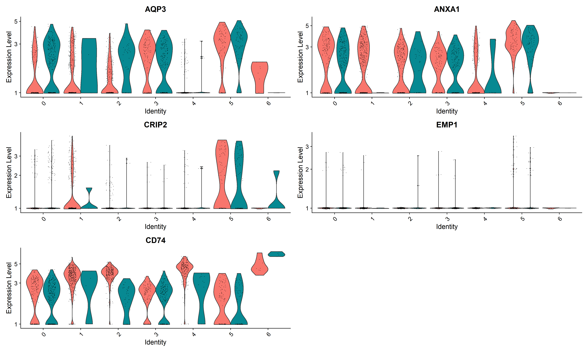
111#每个cluster的高变基因在聚类图中的表达特征图2i<-13while( i <=length(p))4{5 png(paste(getwd(),"/pictures/","feature_cluster",i-1,".png",sep=''), height=6000,width=3000, res=300)6 p[[i]][[2]]7 print(p[[i]][[2]])8 dev.off()9 Sys.sleep(30)10 i<-i+111}以Cluster0为例，效果如图：
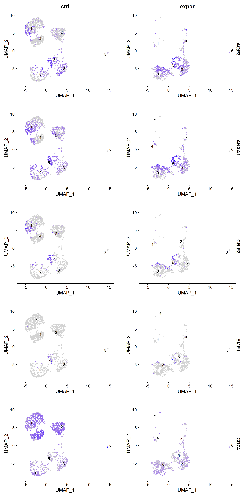
91save(topmarkers,file=(paste(getwd(),"/R_data/topmarkers.Rdata",sep='')))2save(p,file=(paste(getwd(),"/R_data/markerspictures.Rdata",sep='')))3
4#查阅所有的marker基因，返回值根据 p_val由小到大排序5allmarkers<- FindAllMarkers(object = mergedata_clusters, min.pct = 0.1)6
7#(自定义排序）8allmarkers_order<-allmarkers[order(allmarkers$avg_log2FC),]9head(allmarkers_order,10) #查看排名前十的基因信息111##热图可视化每个cluster的marker基因表达差异2#分组选取前十marker3top10 <- allmarkers %>% group_by(cluster) %>% slice_max(avg_log2FC,n=10)4save(top10,file=(paste(getwd(),"/R_data/top10markersofall.Rdata",sep='')))5##上一句中，group_by通过管道函数作用于slice_max，即先根据cluster分为各组，再依据avg_log2FC分别选取每一组的前10（即一共有组数*n个结果）6#group_by处理后的数据不能直接展示处理效果（分组的效果是“隐藏”的），但用于后续计算时自动按组分别进行。可用于分组排序、分组计算平均/中位数等7#slice_max(data.frame,参照列的名称,n=n) 即按照指定列选出前n行，并对结果进行排序。slice_min同理8
9png(paste(getwd(),"/pictures/","HeatMap.png",sep=''), height=10000,width=10000, res=850)10DoHeatmap(mergedata_clusters,features=top10$gene,label=F)11dev.off()
51#点图2top3 <- allmarkers %>% group_by(cluster) %>% slice_max(avg_log2FC,n=3)3png(paste(getwd(),"/pictures/","DotMap.png",sep=''), height=10000,width=10000, res=850)4DotPlot(mergedata_clusters,features=top3$gene,cols=c('red','yellow','green','blue'))5dev.off()
Step4 - 组间基因表达差异分析——火山图
先前的高变基因，仅是进行了组内分析；在很多时候，我们需要对比实验组（exper）和对照组（ctrl）之间，有哪些细胞类型中的哪些基因的表达受到了显著影响，因此需要进行组间基因表达差异分析，即绘制“火山图”
该部分数据保存于工作目录下的DESeq2目录下
991###############################################2#组间差异分析（火山图）-DESeq2包3###############################################4
5###对照组/实验组的差异基因按照细胞类型分别分析6rm(list=ls())#设置工作目录7setwd("U:/R/R_advanced/SingleCellSeq/demo")8load("R_data/mergedata_types_seurat.RData")#载入注释后的Seurat对象9dir.create("R_data/DESeq2")10
11clusterSeurat<-list()12cluster<-levels(mergedata_clusters@meta.data[["seurat_clusters"]])13save(cluster,file="R_data/DESeq2/cluster.RData")14
15for( i in cluster)16{17 ids<-(mergedata_clusters@meta.data[["seurat_clusters"]] == i)18 clusterSeurat[i]<- mergedata_clusters[ ,ids]19}20
21clusterCounts<-list()22
23for( i in cluster)24{25 temp<-as.matrix(clusterSeurat[[i]]@assays[["RNA"]]@counts)26 clusterCounts[[i]]<-temp27}28
29clusterColData<-list()30
31for( i in cluster)32{33 condition<-clusterSeurat[[i]]@meta.data[["group"]]34 clusterColData[[i]]<-data.frame(row.names=colnames(clusterCounts[[i]]),condition,stringsAsFactors = T)35 rownames(clusterColData[[i]])<-colnames(clusterCounts[[i]])36 colnames(clusterColData[[i]])<-'condition'37}38
39clusterDDS_temp<-list()40
41for( i in cluster)42{43 clusterDDS_temp[[i]]<-DESeqDataSetFromMatrix(countData = clusterCounts[[i]],colData = clusterColData[[i]],design = ~condition)44}45
46save(clusterDDS_temp,file="R_data/DESeq2/clusterDDS_temp.RData")47
48clusterDDS<-list()49
50library("DESeq2")#载入包51
52for( i in cluster)53{54 clusterDDS[[i]]<-DESeq(clusterDDS_temp[[i]])55 cat("\nprocess down\n",i,"\n")56}57
58save(clusterDDS,file="R_data/DESeq2/clusterDDS.RData")59
60res<-list()61for( i in cluster)62{63 temp <- DESeq2::results(clusterDDS[[i]], contrast=c("condition", "ctrl", "exper")) 64 #注意此处contrast的顺序，为contrast=c("条件（组别）", "分子组", "分母组")65 #在进行log2FC计算时，为log2("分子组"表达量/"分母组"表达量)。请根据需要，合理安排"分子组"和"分母组"所对应的样本66 res[[i]] <- temp[order(temp$pvalue),]67 cat("\nprocess down\n",i,"\n")68}69save(res,file="R_data/DESeq2/clusterResults.RData")70
71clusterlog2FC<-list()72for( i in cluster)73{74 clusterlog2FC[[i]]<-data.frame(row.names=rownames(res[[i]]),log2FC=res[[i]][ ,"log2FoldChange"],pvalue=res[[i]][ ,"pvalue"])75}76
77library(EnhancedVolcano)#载入包78#分别绘制并保存每一个Cluster的火山图79clusterVolcano<-list()80for( i in cluster)81{82 clusterVolcano[[i]]<-EnhancedVolcano(clusterlog2FC[[i]],83 lab = rownames(clusterlog2FC[[i]]),84 x = 'log2FC',85 y = 'pvalue',86 xlim = c(-4, 4),87 ylim=c(0,8),88 title ='ctrl versus exper',89 subtitle=paste("Cluster ",i,sep=''),90 pCutoff = 10e-3,91 FCcutoff = 1,92 pointSize = 2.0,93 labSize = 5.0)94 png(paste(getwd(),"/pictures/","volcano_cluster_",i,".png",sep=''), height=3000,width=4500, res=250)95 print(clusterVolcano[[i]])96 dev.off()97}98
99save(clusterVolcano,file="R_data/DESeq2/clusterVolcanoPlot.RData")以Cluster 0为例，火山图结果为
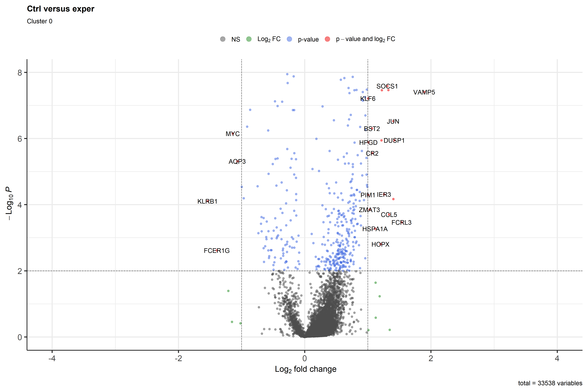
以Cluster 5为例，火山图结果为
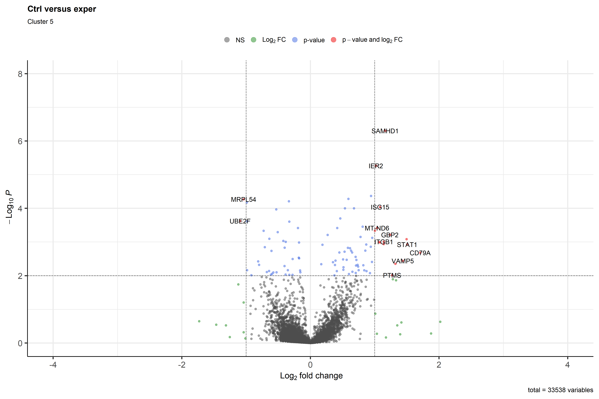
从而可以看出在每一细胞类型之中，对照组vs实验组，哪些基因被上/下调
（标准火山图中，左侧代表下调，右侧代表上调；上侧代表高显著度，即更大的P值。因此，认为左上区域基因发生显著下调，右上区域基因发生显著上调）
注意：计算log2FC时的分子/分母何者对应于实验组/对照组，需要在代码中进行分析时进行指定。具体请参照代码内注释，并建议查看DESeq2::results函数的帮助说明！
番外篇：获取无法下载的包
所需要的包无法正常下载安装是一件很令人头疼的事。尽管Bioconductor包解决了大多数在生物领域依赖包的下载问题，但少数包由于网络限制等原因难以下载
对于该种情况，常用的解决方法包括但不限于：更改下载源、获取程序包的源码并解压至对应目录
对于本文而言，还有一种更为简单的方法，即抄作业！——
下面的下载地址将许多常用的R包（包括本文所需的）整合在一个压缩文件中。从理论上，可以其解压后，将所有文件/文件夹移动至用于存储R包的目录
下载链接（分卷压缩，全部下载后置于同一目录；解压第一个压缩包即可）
找到电脑中R的安装目录（如R-1.4.2）（例如你的R.exe，Rgui.exe程序就位于目录R-1.4.2/bin或R-1.4.2/bin/x64中）
R中所有下载安装的程序包都储存在此目录下的library目录中。其中每个文件夹的名字就代表着对应的一个包。
R-1.4.2/library中内容如图：
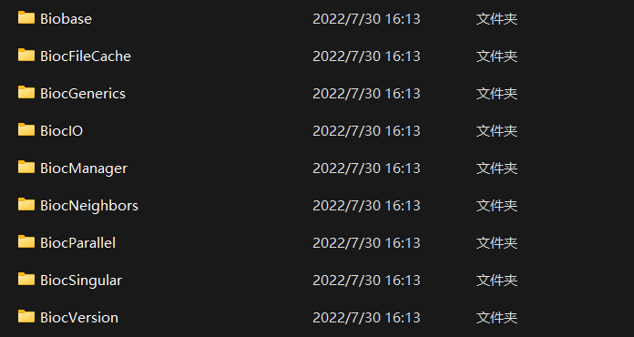
因此就可以实现这些包在不同机器之间的转移——
将上面压缩包中的包解压至library目录（若有重复，可根据版本自行取舍）即可。
（注：部分包版本较旧，可能需要更新。若使用中因为依赖包版本低而无法载入，可以使用BiocManager重新安装该依赖包）